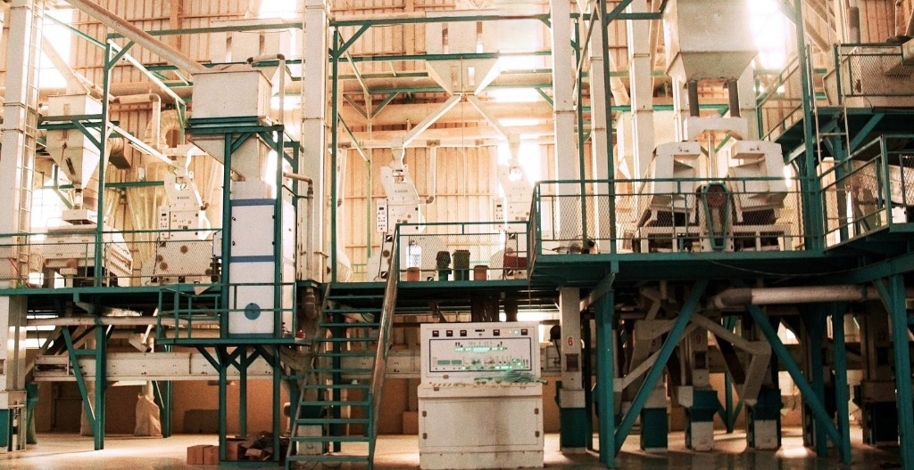
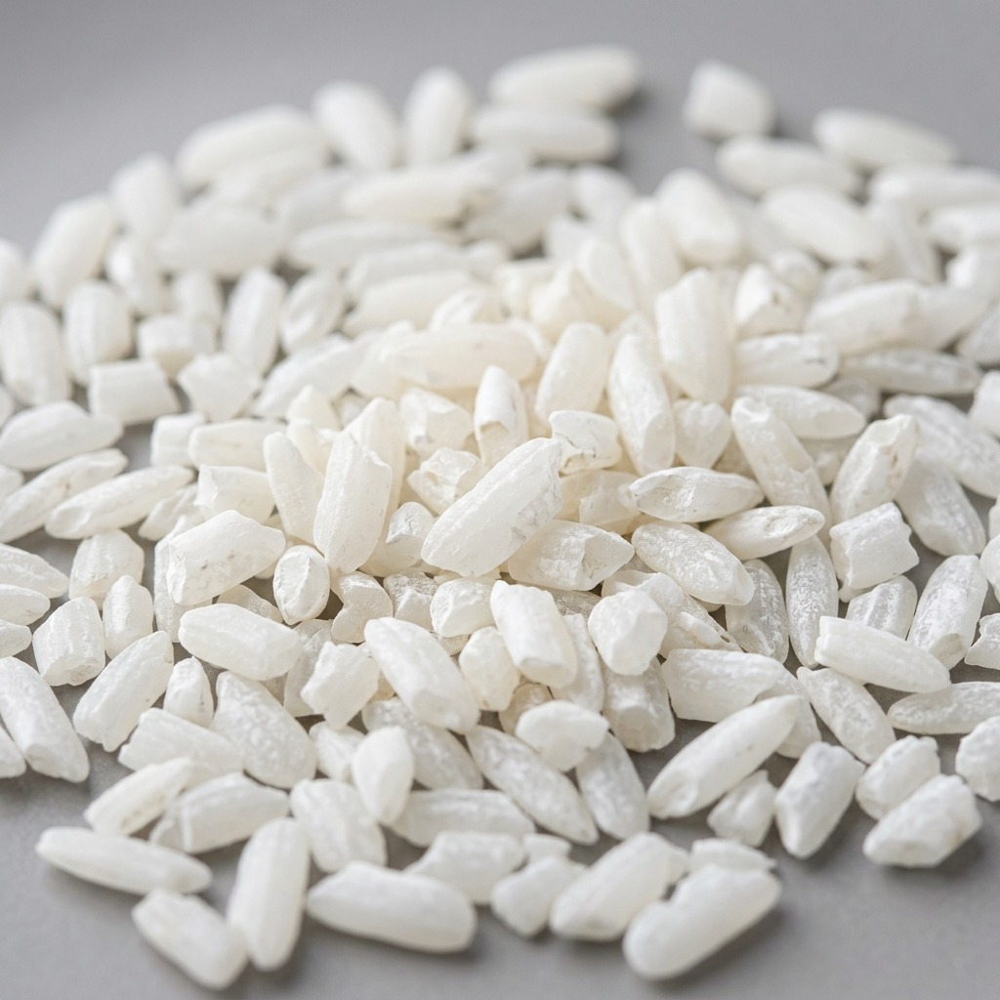
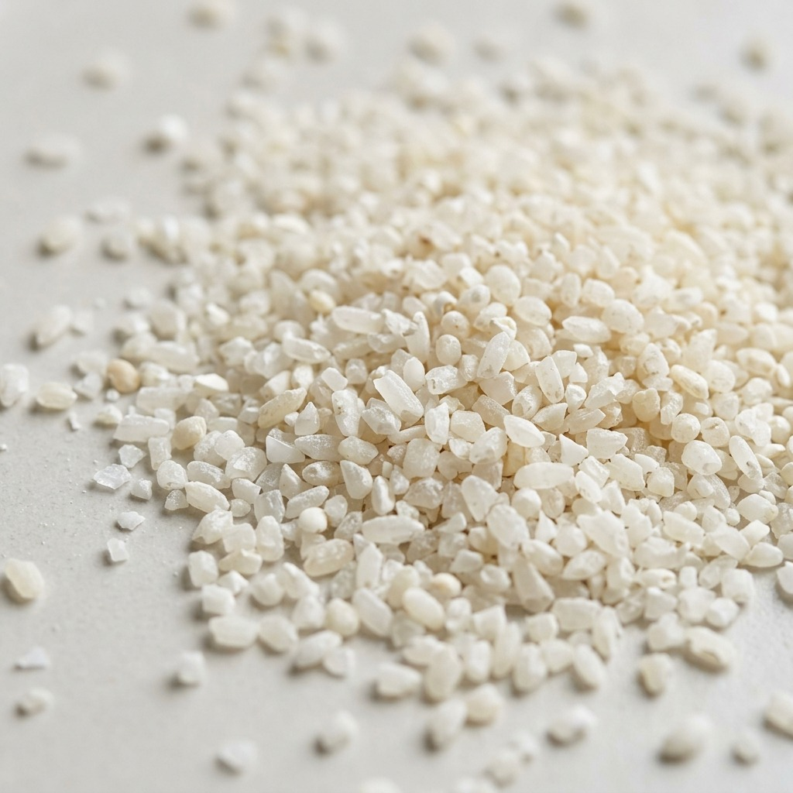
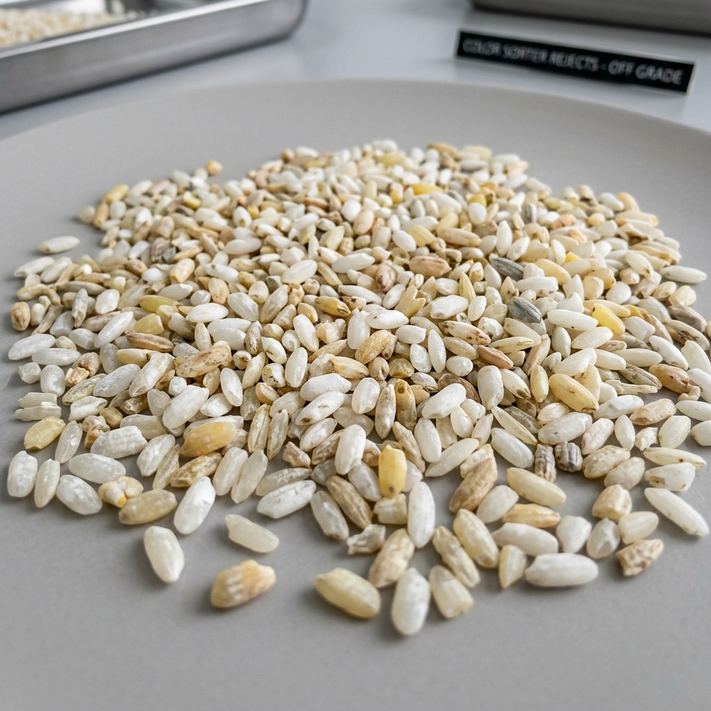

Sentra Fasilitas Pengolahan Terpadu PMD
Menara Pengering Vertikal & Silo Penyimpanan Modern di Kandanghaur, Indramayu.

PT Pangan Masa Depan adalah perusahaan agribisnis pengolahan padi dan beras di Kandanghaur, Indramayu. Dari penerimaan padi hingga beras kemasan bermerk, seluruh tahap berjalan di fasilitas kami sendiri dengan kapasitas giling 300 ton padi per hari.
"Memimpin transformasi industri beras Indonesia — dengan teknologi, bukan janji."
Kami percaya efisiensi dan keberlanjutan bukan pilihan, tapi syarat untuk tetap relevan di industri pangan. Setiap investasi teknologi kami arahkan ke situ.
Sistem penggilingan kami berbasis data: setiap batch terukur, setiap tahap tercatat. Bukan sekadar mesin yang lebih modern, tapi proses yang bisa dipertanggungjawabkan dari awal sampai akhir.
Menara Pengering Vertikal & Silo Penyimpanan Modern di Kandanghaur, Indramayu.

Menaikkan nilai panen padi lewat pengolahan modern — bukan sekadar menggiling, tapi mengolah sampai nilai jualnya maksimal.
Mendata setiap tahap produksi, dari gabah masuk sampai truk berangkat, supaya mutu bisa dibuktikan, bukan diklaim.
Menghubungkan petani, mitra, dan pelanggan dalam satu rantai pasok yang terbuka — harga dan mutu yang sama-sama bisa diperiksa.
Membangun tim yang bekerja cepat dan mau berubah, karena industri pangan tidak menunggu.
Jadi acuan industri beras Indonesia — bukan hanya soal ukuran, tapi soal cara kerja yang bisa ditiru.
Setiap batch punya nomor, setiap keputusan punya nama. Kami bertanggung jawab atas hasil kerja kami, bukan cuma prosesnya.
Teknologi kami pakai untuk memangkas pemborosan — waktu, energi, dan biaya — bukan untuk gaya-gayaan.
Kiriman kesepuluh sama mutunya dengan yang pertama. Itu yang kami jaga, setiap saat.
Kami turun ke lantai produksi, bukan cuma mengawasi dari kantor. Hasil terbaik lahir dari kerja yang dilihat langsung.
Standar yang kami tetapkan sendiri lebih ketat dari yang diwajibkan. Itu levelnya, bukan target.
Setiap keputusan bisa dipertanggungjawabkan — ke atasan, ke mitra, ke diri sendiri.
Pasar berubah, kebutuhan pelanggan berubah — kami menyesuaikan lebih cepat dari itu, bukan mengejar dari belakang.
Setiap padi yang kami olah adalah hasil kerja petani Indonesia. Memperkuat mereka berarti memperkuat ketahanan pangan negeri ini.
Alur kerja terintegrasi 8 stasiun pengolahan modern di fasilitas PMD Kandanghaur — setiap batch terukur, tercatat, dan dapat ditelusuri dari gabah basah hingga beras kemasan bermerk.
10 ragam produk beras bermutu tinggi dari fasilitas penggilingan presisi PT Pangan Masa Depan.
Pemanfaatan bernilai tinggi dari seluruh proses penggilingan padi modern di Indramayu untuk kebutuhan industri pangan, pakan ternak, dan agribisnis.

Patahan butir beras bersih hasil sortasi, sangat cocok sebagai bahan baku bihun, bubur, tepung beras, dan aneka olahan industri makanan.

Pecahan butir beras kecil berkualitas tinggi, menjadi bahan baku pakan ternak bernutrisi, olahan pakan unggas, dan fermentasi industri pangan.

Hasil pemisahan mesin optical color sorter berteknologi tinggi untuk memisahkan bulir kapur atau bintik warna, menjaga kemurnian mutu beras utama.

Sekam padi murni yang dipadatkan menjadi pelet biomassa ramah lingkungan bernilai kalor tinggi untuk bahan bakar boiler industri dan pembangkit energi.

Lapisan kulit ari kaya serat pangan, protein, dan vitamin B kompleks untuk kebutuhan pakan konsentrat ternak dan budidaya perikanan.
Punya pertanyaan seputar ragam produk beras, produk sampingan, atau kerjasama pasokan B2B & industri? Hubungi kami sekarang.
Tim layanan pelanggan kami siap membantu Anda setiap hari kerja untuk pertanyaan seputar produk maupun pemesanan skala besar.
Daftarkan email Anda untuk menerima informasi diskon eksklusif, resep kuliner sehat nusantara, dan artikel panduan nutrisi langsung di kotak masuk Anda.